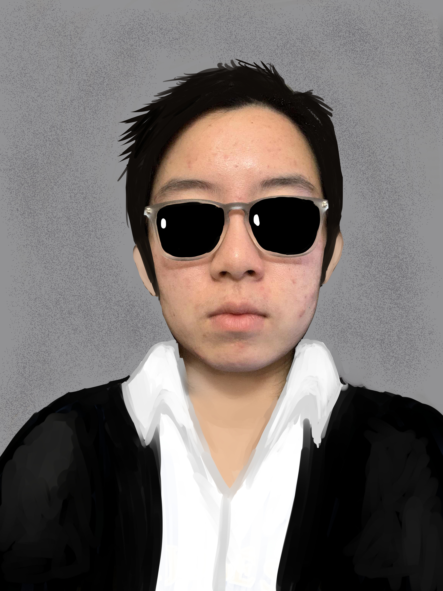
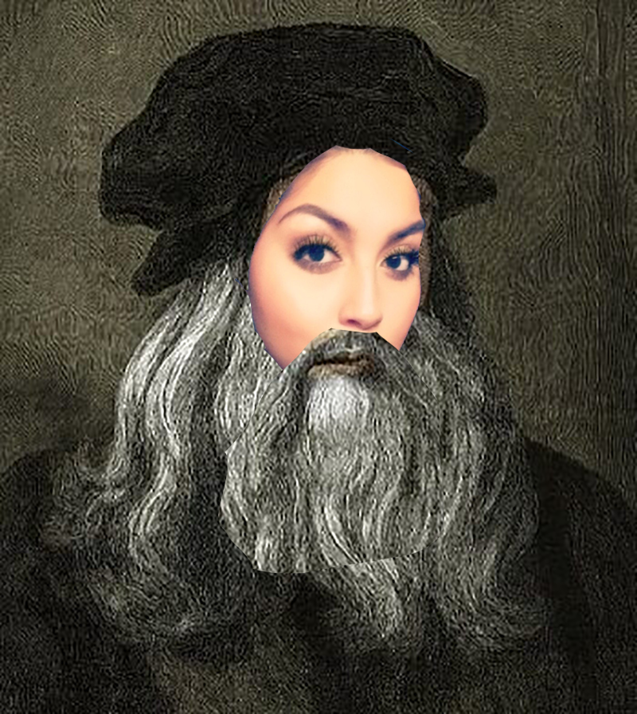
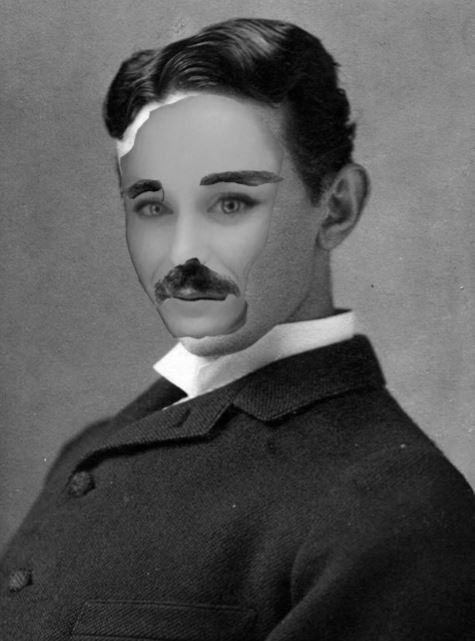
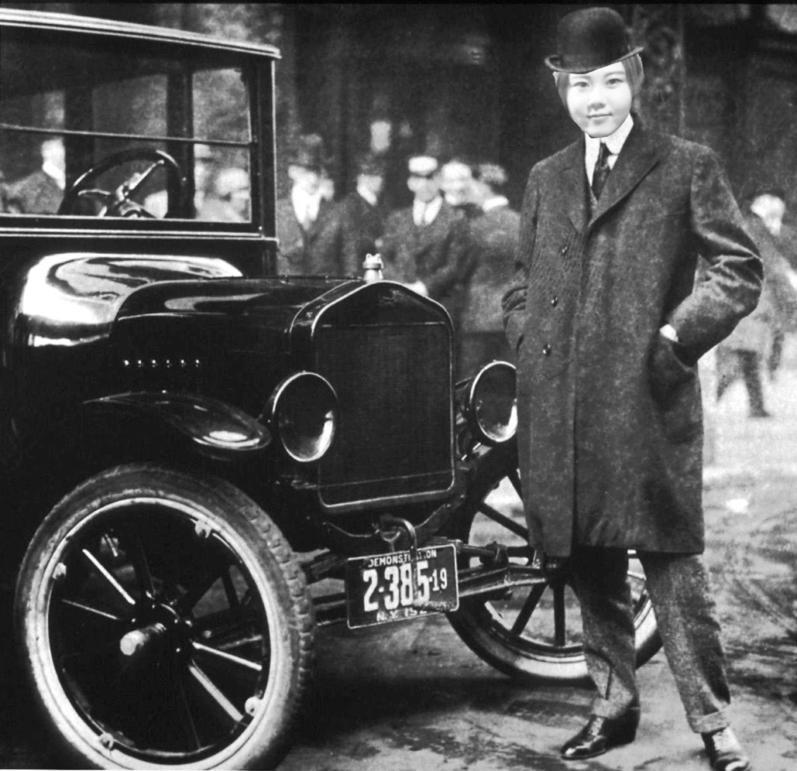

Elon Musk
1) Musk is the owner of the “Wet Nellie,” a Lotus submarine car prop from the 1970s James Bond movie The Spy Who Loved Me.
2) Musk dropped out of Stanford after 2 days.
3) Musk was a master at Dungeons & Dragons.

Leonardo Da Vinci
1) Da Vinci was ambidextrous meaning he was known to be able to write with one hand draw with another
at the same time.
2) Da Vinci was a military engineer... he made extensive detailed drawings of helicopters, automatic rigles, aeroplanes, and parachutes.
3) Bill Gates bought da Vinci notebook for 30.8 million dollars.

Nickola Tesla
1) He had an obsessive personality
Playing into his stereotype of a mad scientist, Tesla suffered from many characteristics that today would likely be classified as obsessive-compulsive disorder. He was obsessed with the number three and detested jewelry, round objects, and touching hair.
2) We can credit him for the idea of wireless Internet and smartphones
Believe it or not, in 1901, Tesla actually had the idea for a wireless way to gather information, code it in his lab, change the frequency, and broadcast it to a hand-held device—nearly exactly how our smartphones work today. Like many of Tesla’s great ideas, it was never created or tested.
3) Mark Twain owes him for shaking his constipation issues
Tesla was constantly looking for more efficient energy sources and built a high-frequency oscillator, known as an earthquake machine, which shook his Manhattan neighborhood when he conducted experiments. Tesla invited his friend Mark Twain, who was known to have constipation issues, to stand on the machine’s platform while he turned it on; within minutes, Twain was running to the bathroom to relieve his problem.
4) Many of his inventions are still classified
Tesla died in 1943, but some of his inventions and experiments are still classified by the U.S. government. After his death, all of his possessions were sized by the Office of Alien Property and eventually released to his family, but a few select items are still behind lock and key.

Henry Ford
1) His curiousity to engineering started when his father gave him a pocket watch.
2) When he was young, he worked as not only an engineer but also as a repairman at the jewelry shop.
3) His invention of Model T popularized cars in the US.
Part 3
{kind=link}
{kind=link}
{kind=link}
{kind=link}